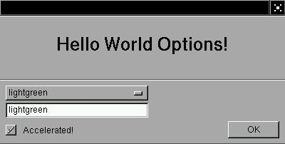
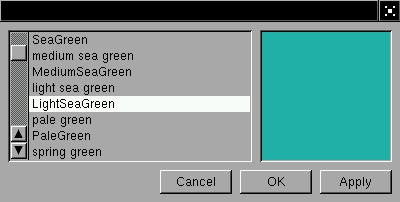
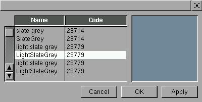
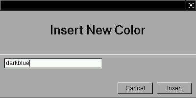
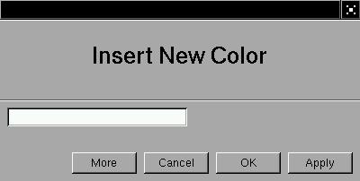
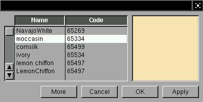
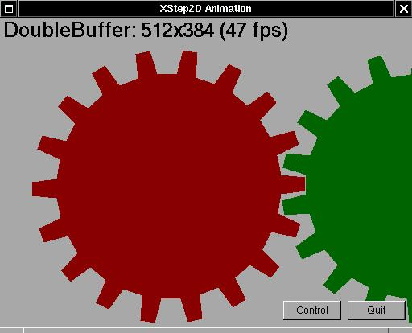
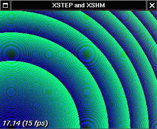

INTRODUÇÃO
Quando o X foi criado, não existiam muitas opções, exceto o toolkit athenas. Grande parte das aplicações clássicas, como o xterm, xedit, xcalc, xclipboard, etc são baseados no athenas (também chamado de Xaw). Embora o athenas pareça ter caído em desuso nos últimos anos, existem variações com look-and-feel mais modernos deste toolkit, como o NeXTaw, Xaw3D e Xaw95.
De fato, o princípio da década foi marcado por uma disputa entre o Open Look da Sun (cujas aplicações podem ser produzidas com o toolkit XView) e o CDE da OSF (cujas aplicações são produzidas com o toolkit Motif da OSF). Em um certo momento a Sun desistiu de lutar e acabou por adotar o CDE nas suas estações UNIX, tornando o CDE o look-and-feel padrão dos UNIX comerciais. Como se trata de um produto comercial, com custos relativamente altos, o CDE não emplacou na outra metade do mercado, representado pelas variações livres, como o Linux e FreeBSD, deixando o território aberto para toolkits com licenças mais flexíveis, como o QT, utilizado no projeto KDE (nitidamente um projeto tentando fornecer um CDE livre) e o GTK, toolkit utilizado no famoso GIMP e atualmente utilizado no projeto GNOME (com os mesmos objetivos do KDE). O GTK e o QT, em princípio, produzem aplicações com o look-and-feel do CDE.
Buscando um look-and-feel diferente do tradicional CDE ou OpenLook, aparecem projetos interessantes, como o WINGs e o XSTEP. O WINGs é o toolkit utilizado pelo Window Maker e seus pequenos utilitários, permitindo, portanto, o desenvolvimento de pequenas aplicações com o look-and-feel do NeXTSTEP. Infelizmente a programação parece um pouco pesada, de modo que se programa diretamente na biblioteca X e o WINGs fornece alguma ajuda.
O XSTEP também é um toolkit com o look-and-feel do NeXTSTEP, mas seu projeto é bem mais antigo e passou por uma série de modificações com o passar dos anos, tornando-se extremamente compacto, eficiente e fácil de programar. Muitos programadores que consideram o X muito complexo e ineficiente podem ter uma boa surpresa com o XSTEP. O fonte do toolkit também é uma valiosa referência para os programadores interessados em desenvolver seu próprio toolkit, pois o código é bem legível, compacto e eficiente. O XSTEP costuma mudar os conceitos das pessoas frente ao X, portanto vamos experimentar escrever algumas pequenas aplicações com ele.
INSTALANDO O XSTEP
Existem 4 versões principais do XSTEP. As versões 1.2 e 2.0 são versões antigas, baseadas em gadgets e podem ter alguma utilidade como referência para programadores interessados em escrever algum toolkit baseado em gadgets. A versão 4.0 está em desenvolvimento e restam as variações da versão 3.0, sendo a 3.5.1 a versão mais atualizada. As últimas versões do XSTEP estão disponíveis no endereço http://xstep.dhs.org ou ftp://sunsite.unc.edu/pub/Linux/libs/X/clibs (inclusive em CDs de mirrors da sunsite). Se a versão disponível no mirror da sunsite for um pouco antiga, não existem muitos problemas, salvo alguns recursos novos e algumas melhorias, os aplicativos compilados nas versões 3.x antigas tem compatibilidade binária com a biblioteca da última versão (atualmente 3.5.1). Aplicativos compilados com a versão 2.0 e 3.0 podem ser facilmente recompiladas com poucas modificações (existem exemplos de como fazer isto na versão 3.5.1).
Com a última versão do XSTEP em mãos, podemos fazer a instalação facilmente:
tar xzpvf xstep-3.5.tar.gz cd xstep-3.5/library make installUma vez instalado o XSTEP, é possível rodar alguma aplicação de exemplo que acompanhe o pacote para se certificar de que a biblioteca está corretamente instalada, no diretorio examples e contrib existem muitas aplicacoes de teste e exemplo.
HELLO WORLD - PARTE 5: POWERED BY XSTEP
Embora nem todo toolkit seja compacto como o XSTEP, é certo que algum toolkit simplifica razoávelmente o código, pelo simples motivo de que todo o tratamento de eventos e gerenciamento de objetos passa a ser feito automaticamente. Podemos comparar nossos exemplos anteriores com a simplicidade de um produzido com um toolkit:
#include <xstep.h>
void xmain(int i,char **p) {
window_create(0,0,640,480,p[0]);
label_create(0,0,640,480,"hello world!",invisible,center);
}
Muita atenção! no XSTEP os programas começam com xmain(),
de modo que a função main() verdadeira está
escondida dentro das entranhas do toolkit, o que facilita a programação
consideravelmente.
A compilação fica um pouco mais complicada, pois precisamos incluir os caminhos tanto da biblioteca e cabeçalho do X quanto do XSTEP, então fica mais fácil escrever um arquivo Makefile:
CC = gcc CFLAGS = -Wall -O3 -funroll-loops -fomit-frame-pointer -pipe CFLAGS += -I/usr/X11R6/include -I/usr/X11/include CFLAGS += -I/usr/local/include CFLAGS += -L/usr/X11R6/lib -L/usr/X11/lib -lX11 CFLAGS += -L/usr/local/lib -lxstep APPLICATIONS = helloworld all: $(APPLICATIONS) clean: rm $(APPLICATIONS)Com este arquivo no mesmo diretório do programa exemplo (supondo que ele se chame helloworld.c), basta digitar make para que o programa seja compilado. Este Makefile pode servir para compilar quantos programas desejarmos, bastando incluir novos programas na variável APPLICATIONS:
APPLICATIONS = helloworld helloworld-2 helloword-3 xphotoshop xpagemakerQuando executamos make, o programa verifica os programas neste variável e procura pelos respectivos arquivos .c, compilando eles se estiverem atualizados (uma característica boa do make é que ele só recompila os programas que forem efetivamente modificados, poupando tempo).
Uma vez compilado, nosso programa, teremos uma janela com a frase hello world no centro, mas, diferentemente dos nossos outros exemplos, o tamanho da fonte é Helvetica 12, pois é a fonte padrão das widgets do XSTEP. Existem formas variadas de modificar a fonte, de acordo com a versão da XSTEP. As versões mais antigas tem uma sintaxe mais complicada, mas aceita por todas as versões:
#include <xstep.h>
void xmain(int i,char **p) {
window_create(0,0,640,480,p[0]);
label_create(0,0,640,480,"hello world!",invisible,center);
XSetFont(display,treestk->treestk->gc,(treestk->treestk->font=
XLoadQueryFont(display,"-*-garamond-*-*-*-*-*-720-*-*-*-*-*-*"))->fid);
}
Um pouco confuso! As versões mais novas do XSTEP simplificam bastante
isto, através de algumas melhorias no código de criação
das widgets:
#include <xstep.h>
void xmain(int i,char **p) {
window_create(0,0,640,480,p[0]);
defaultfont=XLoadQueryFont(display,"-*-garamond-*-*-*-*-*-720-*-*-*-*-*-*");
label_create(0,0,640,480,"hello world!",invisible,center);
}
Deste modo as widgets já são criadas com a nova fonte como
padrão (a fonte padrão pode ser facilmente restabelecida
com o código 'defaultfont=helvetica12m'). Claro que a sintaxe antiga
pode ser utilizada na versão mais nova, mas a sintaxe nova não
é suportada na versão mais antiga, então é
altamente recomendável que se consiga uma versão nova, pois
a sintaxe se torna muito mais simples. Assumindo que agora estamos realmente
contentes por ter o mesmo resultado dos exemplos anteriores feitos diretamente
na biblioteca X, podemos observar com mais detalhes nosso programa. Diferentemente
da nossa primeira versão, esta versão permite que movimentemos
a janela, maximizemos, redimensionemos e, para nossa surpresa, a frase
hello world é automaticamente redesenhada na janela, comprovando
que o toolkit deve estar manipulando eventos de exposição
de área das janelas. Se consultarmos o fonte da biblioteca, perceberemos
que ela chega a formar um cache de até 32 áreas retângulares
expostas em uma mesma janela, o que permite enviar ao servidor X uma máscara
complexa formada pela união das áreas expostas e redesenhar
uma única vez somente as áreas expostas.
O RETORNO DOS BOTÕES
Em nosso último exemplo baseado diretamente na biblioteca X, criamos alguns botões para demonstrar como construir uma widget no X, então como se comportará a mesma widget no XSTEP ? vejamos:
#include <xstep.h>
void xmain(int i,char **p) {
window_create(0,0,640,480,p[0]);
defaultfont=helvetica24b;
button_create(64,64,200,100,"hello world!",0);
button_create(280,64,200,100,"quit",window_close);
}
O código é muito mais simples e o resultado, certamente,
muito mais bonito e eficiente, mas ainda não mostra todos os recursos
possíveis que o toolkit pode fornecer. Nos exemplos com a biblioteca
X fizemos algumas animações simples, vejamos como o toolkit
se sai com isto:
#include <xstep.h>
int x,y,ix,iy,z;
char *message="hello world";
void drawf(struct xtree *t) {
XSetForeground(display,t->gc,black);
XDrawString(display,t->win,t->gc,x,y,message,strlen(message));
if((x+z)>=t->aw) ix=-1;
if(x<=0) ix= 1;
if(y>=t->ah) iy=-1;
if((y-20)<=0) iy= 1;
x+=ix; y+=iy;
XSetForeground(display,t->gc,white);
XDrawString(display,t->win,t->gc,x,y,message,strlen(message));
XFlush(display);
}
void xmain(int i,char **p) {
window_create(0,0,640,480,p[0]);
button_create(-8,-8,72,24,"quit",window_close);
defaultfont=helvetica24b;
box_create(8,8,-8,-40,drawf,black);
x=64,y=64,ix=1,iy=1;
z=XTextWidth(defaultfont,message,strlen(message));
animate=1;
}
Este exemplo ilustra uma série de novidades do toolkit. Realmente
é interessante como tão pouco código consegue funcionar
tão bem: neste exemplo podemos até redimensionar a janela
que as widgets são misteriosamente redimensionadas juntas! esta
característica interessante é desempenhada automaticamente
pelo toolkit, que intercepta eventos sobre a organização
das janelas e propaga as modificações dos descritores de
widgets, de modo que a aplicação sempre reflete o tamanho
real da janela. No caso da widget grande e preta que roda nossa animação,
o tamanho e posição dela é passada com uma combinação
interessante de números: 8,8,-8,-40. É obvio que não
existe tamanho negativo para uma widget, então os valores são
interpretados como sendo posições relativas ao canto inferior
direito da janela. No caso do botão, passamos os valores -8,-8,72,24.
Fica claro que a posição negativa também é
relativa ao canto inferior direito, de fato, quando redimensionamos a janela,
o botão insiste em manter exatamente a mesma distância do
canto inferior direito e, sem surpressas, essa distância corresponde
justamente à posição especificada durante a criação
do botão. Um bom exemplo deste tipo de combinação
é dado pelo seguinte código exemplo:
#include <xstep.h>
void xmain(int n,char **p) {
window_create(0,0,400,180,"resizable window");
button_create( 8, 8, -8, -8, "center", 0);
button_create( 16, 16, 80, 24, "top left", 0);
button_create( -16, 16, 80, 24, "top right", 0);
button_create( 16,-16, 80, 24, "bottom left", 0);
button_create( -16,-16, 80, 24, "bottom right", 0);
}
Este exemplo demonstra várias combinações de posição
e tamanho com o objetivo de demonstrar o uso de coordenadas relativas aos
cantos das janelas, de modo que estas janelas sejam facilmente redimensionáveis.
Retornando ao nosso exemplo, observamos que a widget que contém nosso desenho é criada e, como um dos parâmetros dela, é passado o nome da função drawf(). Isto ocorre porque o XSTEP trabalha com call-backs, ou seja, os eventos gerados pelo servidor X ou pelo proprio XSTEP acionarão nossas funções (portanto xmain() não se trata de um loop de eventos, pelo contrário, apenas constrói as widgets e devolve o controle ao toolkit). No nosso exemplo, o XSTEP acionará continuamente a função drawf() para redesenhar aquela widget. Mas porque ? vamos experimentar uma pequena modificação no código:
void startf(struct xtree *t) { animate=1; }
void stopf (struct xtree *t) { animate=0; }
void xmain(int i,char **p) {
window_create(0,0,640,480,p[0]);
button_create(-8,-8,72,24,"quit",window_close);
button_create(-88,-8,72,24,"start",startf);
button_create(-168,-8,72,24,"stop",stopf);
defaultfont=helvetica24b;
box_create(8,8,-8,-40,drawf,black);
x=64,y=64,ix=1,iy=1;
z=XTextWidth(defaultfont,message,strlen(message));
}
Observe que o topo do programa permanece o mesmo, apenas adicionamos duas
funções novas, adicionamos dois botões que acionam
estas funções e removemos a última linha de código
que atribuia o valor 1 à variável animate do XSTEP.
O programa inicia com a animação parada. Se clicarmos no botão start, a animação funciona como antes, clicando no botão stop ela volta a parar. Na verdade a variável animate permite controlar a forma com que o XSTEP recebe os eventos do sevidor X, de modo que com um valor diferente de zero, algumas widgets pensam que estão continuamente recebendo eventos do servidor X.
Antes de passar para o próximo exemplo, alguns comentários sobre drawf(): trata-se de uma função baseada em chamadas básicas da biblioteca X, de modo a desenhar a frase hello world pela tela. Embora o código seja razoavelmente óbvio, baseado em incrementos de x e y alteráveis, conforme o objeto alcança as laterais da área de desenho, devemos observar que grande parte dos parâmetros são baseados em membros da variável t, que aponta para o descritor XSTEP do objeto em questão (uma caixa especialmente orientada para gráficos).
CAIXAS DE DIÁLOGO
Obviamente um toolkit oferece muito mais opções, de modo que podemos incrementar nossos programas com diversos outros tipos de widgets, como caixas de texto, menus popup, opções de checagem e caixas de diálogo, que não podem ser ignoradas pelo usuário (não podem ser fechadas nem minimizadas):

#include <xstep.h>
int x,y,ix,iy,z;
char *message="hello world",
colorbuffer[64],
colorname[64]="Blue",
turbo[64];
char *colors[]={
"Cyan",
"Yellow",
"Magenta",
"Blue",
"Red",
"Green"
};
void drawf(struct xtree *t) {
int c;
if(*turbo) c=10; else c=1;
XSetForeground(display,t->gc,black);
XDrawString(display,t->win,t->gc,x,y,message,strlen(message));
if((x+z)>=t->aw) ix=-1;
if(x<=0) ix= 1;
if(y>=t->ah) iy=-1;
if((y-20)<=0) iy= 1;
x+=(ix*c); y+=(iy*c);
XSetForeground(display,t->gc,getnamedcolor(colorname));
XDrawString(display,t->win,t->gc,x,y,message,strlen(message));
XFlush(display);
}
void updatef(struct xtree *t) {
if(*colorbuffer)
strcpy(colorname,colorbuffer);
else
strcpy(colorname,"White");
}
void optionsf(struct xtree *t) {
dialog_create(400,180);
defaultfont=helvetica24b;
label_create(0,0,0,90,"Hello World Options!",gray,up);
defaultfont=helvetica12m;
label_create(0,90,0,0,"",gray,up);
popup_create(8,98,200,21,colorname,colors,6*21);
edit_create (8,98+24,200,21,colorbuffer,64,updatef);
check_create(8,-8,100,21,"Accelerated!", turbo);
button_create(-8,-8,72,24,"OK",window_close);
}
void xmain(int i,char **p) {
window_create(0,0,640,480,p[0]);
button_create(-8,-8,72,24,"Quit",window_close);
button_create(-88,-8,72,24,"Options",optionsf);
defaultfont=helvetica24b;
(box_create(8,8,-8,-40,drawf,black))->expose=0;
z=XTextWidth(defaultfont,message,strlen(message));
x=64,y=64,ix=1,iy=1;
defaultfont=helvetica12m;
animate=1;
}
Tratemos cada segmento do código de acordo com o grupo de widgets,
iniciando pela janela principal, que simplesmente apresenta parte de outro
exemplo já abordado, exibindo uma caixa preta com a frase animada
hello world, que é continuamente desenhada pela função
drawf(). Temos um botão Quit, que aciona uma função
window_close() (cuja função, facilmente, deduzimos
ser de fechar a janela onde este botão se encontra), e um botão
Options que aciona a função optionsf(). Esta
função, por sua vez, aciona uma caixa de diálogo.
Uma caixa de diálogo, no XSTEP, não pode ser ignorada facilmente pelo usuário: ela se mantém sempre à frente da aplicação dona da caixa e, ao mesmo tempo, não pode ser minimizada nem fechada, forçando o usuário a acionar o botão OK. Nesta caixa, em particular, criamos uma série de widgets interessantes. Em primeiro lugar decoramos a caixa com alguns labels, dividindo a caixa em duas metades, com a superior exibindo um pequeno texto informativo sobre a utilidade da mesma (poderia ser uma mensagem de alerta também) e a parte inferior reservada para algumas widgets com opções.
Seguindo a seqüência, criamos uma caixa popup, com diversas opções de cor (as opções são definidas no topo do código):
char colorname[64]="Blue";
...
char *colors[]={
"Cyan",
"Yellow",
"Magenta",
"Blue",
"Red",
"Green"
};
...
popup_create(8,98,200,21,colorname,colors,6*21);
Observe que, colorname é um buffer de texto, preenchido como
default com o conteúdo Blue. Entre os parâmetros da
caixa é fácil identificar que temos posição,
tamanho, o buffer de texto, a lista de opções e, finalmente,
um parâmetros um tanto quanto problemático: a quantidade de
itens da caixa popup. Infelizmente, para manter compatibilidade binária
com versões anteriores, um pequeno erro descoberto mais tarde no
XSTEP exige que se multiplique o número de itens da lista de opções
pela altura da caixa popup, resultando no enigmático 6*21.
O funcionamento da caixa popup é simples: clicamos sobre ela e escolhemos uma das opções, que será copiada para o buffer de texto. Como podemos também observar, se outra widget modificar o buffer de texto, a caixa popup reflete a modificação instantâneamente, ou seja, ela tanto pode modificar o buffer de texto quando ser modificada por ele. Grande parte das widgets do XSTEP consegue detectar estas mudanças porque gera checksums das variáveis e buffers: quando um buffer é modificado, o checksum se altera e a widget atualiza a tela e recalcula o checksum, até que nova modificação no buffer seja efetuada. Para que a verificação ocorra, a cada modificação deve ser incrementado um contador de modificações denominado broadcast. Um detalhe interessante é que a variável animate habilita e desabilita a verificação continua de checksum (as nossas animações, para o XSTEP, são simplesmente uma continua solicitação de checksum de buffers).
Outra widget nova é a caixa de texto:
char colorbuffer[64],colorname[64]="Blue";
void updatef(struct xtree *t) {
if(*colorbuffer)
strcpy(colorname,colorbuffer);
else
strcpy(colorname,"White");
}
...
edit_create (8,98+24,200,21,colorbuffer,64,updatef);
A caixa de texto permite a digitação de texto, de modo que
passamos a posição da caixa, o tamanho, um buffer de digitação
(observe que na medida que é digitado o texto, o buffer é
modificado), o tamanho do buffer e uma função verificadora,
que chamamos de updatef(). A função verificadora sempre
é acionada quando saimos da caixa, ou seja, saltamos para outra
ou pressionamos ENTER dentro da caixa, de modo que, no nosso exemplo, a
função verificadora é chamada. No caso de updatef(),
ela simplesmente verifica se o buffer de digitação não
está vazio e copia para o outro buffer definitivo, do contrário
ela copia um valor padrão. O buffer de texto definitivo, no exemplo,
é o mesmo que o buffer de texto da caixa popup, de modo que digitar
algo na nossa caixa de texto se reflete na caixa popup.
Finalmente, a ultima widget interessante é uma caixa de verificação ou checagem:
char turbo[64]; ... check_create(8,-8,100,21,"Accelerated!", turbo);Seu funcionamento é simples: quando acionada, o buffer de texto contém o nome da caixa. Quando desacionada, o buffer é apagado. Tanto a variável turbo da caixa de verificação quanto a variável colorname da caixa de texto e popup são utilizadas como parâmetros da função drawf(), permitindo mudar a velocidade e a cor de exibição da animação.
Na caixa de texto podemos digitar alguns nomes de cores em inglês e a função getnamedcolor() tentará obter a cor na lista de cores do servidor X. Opcionalmente podemos digitar a cor codificada em hexadecimal, obedecendo a notação #RGB, #RRGGBB ou #RRRRGGGGBBBB, onde cada letra corresponde a digitos hexadecimais codificando numéricamente a cor desejada.
CAIXAS DE DIÁLOGO AVANÇADAS
A lista popup é uma boa opção para uma quantidade reduzida de escolhar, mas para uma grande quantidade se torna inviável (experimente criar um menu popup tão grande quanto a tela e você descobrirá porque :). A caixa de texto nos dá a opção de digitar o nome da cor desejada, mas é um tanto quanto pouco prático ficar experimentando nomes de cores até encontrar uma que seja aceita pelo servidor X. Uma opção seria exibir uma lista com todas as cores (embora este exemplo funcione em qualquer display, é necessário alertar que ele irá alocar em média 800 cores, portanto um display com 8 bits de cor não conseguirá exibir muitas delas), mas disposta em um tamanho físico compacto:

#include <xstep.h>
int x,y,ix,iy,z;
char *message="hello world",
colorname[64]="White",
turbo[64]="1x",
*colors[4096];
int colorptr,colormax;
void drawf(struct xtree *t) {
int c;
c=atoi(turbo);
XSetForeground(display,t->gc,black);
XDrawString(display,t->win,t->gc,x,y,message,strlen(message));
if((x+z)>=t->aw) ix=-1;
if(x<=0) ix= 1;
if(y>=t->ah) iy=-1;
if((y-20)<=0) iy= 1;
x+=(ix*c); y+=(iy*c);
XSetForeground(display,t->gc,getnamedcolor(colorname));
XDrawString(display,t->win,t->gc,x,y,message,strlen(message));
XFlush(display);
}
void showcolorf(struct xtree *t) {
if(colormax) downbox(0,0,t->aw,t->ah,getnamedcolor(colors[colorptr]),t);
}
void applyf(struct xtree *t) {
if(colormax) strcpy(colorname,colors[colorptr]);
}
void okf(struct xtree *t) {
if(colormax) strcpy(colorname,colors[colorptr]);
window_close(t);
}
void colorsf(struct xtree *t) {
dialog_create(400,180);
scroll_create(8,8,-148,-40,&colorptr,&colormax,colors,0);
box_create(-8,8,132,132,showcolorf,black);
button_create(-168,-8,72,24,"Cancel",window_close);
button_create(-88,-8,72,24,"OK",okf);
button_create(-8,-8,72,24,"Apply",applyf);
}
void xmain(int i,char **p) {
FILE *f;
char buffer[256],*q;
struct xtree *w;
f=fopen("/usr/X11R6/lib/X11/rgb.txt","r");
while(fgets(buffer,256,f)) {
if(buffer[0]=='!') continue;
buffer[strlen(buffer)-1]=0;
q=buffer;
while(*q<33) q++;
while(*q>32) q++;
while(*q<33) q++;
while(*q>32) q++;
while(*q<33) q++;
while(*q>32) q++;
while(*q<33) q++;
colors[colormax]=(char *)malloc(1+strlen(q));
strcpy(colors[colormax],q);
colormax++;
}
fclose(f);
window_create(0,0,640,480,p[0]);
radio_create((8+50*0),-8,50,21,"1x",turbo);
radio_create((8+50*1),-8,50,21,"2x",turbo);
radio_create((8+50*2),-8,50,21,"4x",turbo);
radio_create((8+50*3),-8,50,21,"8x",turbo);
radio_create((8+50*4),-8,50,21,"16x",turbo);
radio_create((8+50*5),-8,50,21,"32x",turbo);
button_create(-8,-8,72,24,"Quit",window_close);
button_create(-88,-8,72,24,"Colors",colorsf);
defaultfont=helvetica24b;
w=box_create(8,8,-8,-40,drawf,black);
w->expose=0;
z=XTextWidth(defaultfont,message,strlen(message));
x=64,y=64,ix=1,iy=1;
defaultfont=helvetica12m;
animate=1;
}
É um código extenso, mas claro e de fácil compreensão.
O código XSTEP da lista, de fato, se limita a pouco segmentos:
char *colors[4096]; int colorptr,colormax; ... scroll_create(8,8,-148,-40,&colorptr,&colormax,colors,0);Na lista definimos apenas a posição e tamanho, passamos um ponteiro para um inteiro que indica o item que está ativo na lista, um ponteiro para um inteiro que indica o tamanho total da lista e finalmente passamos um array de ponteiros, cada um apontando para uma string, que será um item da lista. O tamanho do array é definido estaticamente como tendo até 4096 itens, mas o número exato é indicado dinâmicamente pelo inteiro colormax. A lista é preenchida pelo seguinte segmento de código:
f=fopen("/usr/X11R6/lib/X11/rgb.txt","r");
while(fgets(buffer,256,f)) {
if(buffer[0]=='!') continue;
buffer[strlen(buffer)-1]=0;
q=buffer;
while(*q<33) q++;
while(*q>32) q++;
while(*q<33) q++;
while(*q>32) q++;
while(*q<33) q++;
while(*q>32) q++;
while(*q<33) q++;
colors[colormax]=(char *)malloc(1+strlen(q));
strcpy(colors[colormax],q);
colormax++;
}
fclose(f);
Basicamente um loop de leitura baseado em fgets(), onde as linhas
do arquivo lido são processados um a um no loop. Quando o arquivo
chega ao fim, a função de leitura retorna zero e o loop se
encerra. Dentro do loop é feito algum processamento para buscar
os dados. Basicamente evitamos comentários, removemos o caracter
de nova-linha presente no fim de cada linha e varremos a linha procurando
por alguns campos delimitados por espaço ou tabulação.
Encontrando o campo desejado, alocamos um item na lista
colors e
incrementamos o indicador de tamanho colormax.
O acesso a itens da lista é muito simples (este código é apenas ilustrativo):
Como a lista é delimitada por colormax, podemos utilizar:
O resto do código, essencialmente é o mesmo. Modificamos a seleção de velocidade, de modo que ao invés um modo acelerado, temos um conjunto de widgets que nos permite dobrar a velocidade até 32 vezes, sendo que somente uma opção pode ser selecionada ao mesmo tempo. Outro código interessante é uma demonstração de como construir uma caixa de diálogo utilizando variáveis temporárias, de modo a não aplicar as modifições no momento das seleções. Trata-se somente de um pequeno truque com botões, mas certamente está entre os truques mais importantes do nosso exemplo, pois permite a criação de caixas de diálogo mais avançadas.
Finalmente, um pequeno segmento de código que nos chama a atenção é o uso da função downbox(). Não se trata de uma widget, de fato esta função faz parte de um conjunto de utilitários encontrados dentro da biblioteca do XSTEP (lamentávelmente estas funções ficaram esquecidas e não se encontram no manual de referência publicado na versão 3.3 do XSTEP, mas estão oficialmente disponíveis como qualquer outra função e são utilizadas em muitos exemplos) e sua função é simplesmente desenhar uma caixa colorida com um aspecto tridimensional (também existe uma respectiva upbox()). Embora simples, estas funções são extremamente importantes no XSTEP.
E se desejássemos uma lista com mais de uma coluna ao mesmo tempo ? a modificação é relativamente simples, embora tenhamos que utilizar outra widget. No caso do XSTEP, uma lista com multiplas colunas na verdade é uma macro que cria várias listas normais ligadas, de modo que se parece uma lista com multiplas colunas:

#include <xstep.h>
int x,y,ix,iy,z;
char *message="hello world",
colorname[64]="White",
turbo[64]="1x";
char *colors[4096],*codes[4096];
struct mlist multi[]={
{ "Name", colors, 100 },
{ "Code", codes, 100 },
};
int colorptr,colormax;
...
void colorsf(struct xtree *t) {
dialog_create(400,180);
box_create(-8,8,132,132,showcolorf,black);
mscroll_create(8,8,-148,-40,&colorptr,&colormax,multi,0,applyf,0,2);
button_create(-168,-8,72,24,"Cancel",window_close);
button_create(-88,-8,72,24,"OK",okf);
button_create(-8,-8,72,24,"Apply",applyf);
}
...
while(fgets(buffer,256,f)) {
if(buffer[0]=='!') continue;
buffer[strlen(buffer)-1]=0;
q=buffer;
while(*q<33) q++;
while(*q>32) q++;
while(*q<33) q++;
while(*q>32) q++;
while(*q<33) q++;
while(*q>32) q++;
while(*q<33) q++;
colors[colormax]=(char *)malloc(1+strlen(q));
strcpy(colors[colormax],q);
sprintf(buffer,"%d",getnamedcolor(q));
codes[colormax]=(char *)malloc(1+strlen(buffer));
strcpy(codes[colormax],buffer);
colormax++;
}
...
A modificação, de fato, é bem pequena, e certamente
são modificações fáceis de encontrar na forma
que estamos apresentando (de certa forma, faz parte do exercício
efetuar as modificações corretamente :). Quando compilado,
notamos que a lista passa a apresentar também o código que
indexa a cor no sistema de cores do X. Uma vantagem deste tipo de lista
é que ela aceita nada menos do que três funções
de call-back (enquanto que a outra lista aceita somente uma): a função
de modificação, acionada quando mudamos de um item para outro,
uma função de duplo-click (que neste exemplo atribuímos
à função applyf(), de modo que um duplo-click
aplica instantâneamente a cor desejada) e uma função
acionada pelo botão direito do mouse.
A finalidade de uma função acionada pelo botão direito do mouse sobre um item da lista é justamente o acionamento de um menu popup, possivelmente para escolhermos comandos sobre determinado item da lista ou coisas do genero. Podemos, portanto, criar um menu popup para inserir ou remover itens da nossa lista:
char colorbuffer[64];
void insertf(struct xtree *t) {
if(!*colorbuffer) return;
colors[colormax]=(char *)malloc(1+strlen(colorbuffer));
strcpy(colors[colormax],colorbuffer);
sprintf(colorbuffer,"%d",getnamedcolor(colorbuffer));
codes[colormax]=(char *)malloc(1+strlen(colorbuffer));
strcpy(codes[colormax],colorbuffer);
colormax++;
window_close(t);
}
void decodemenuf(struct xtree *t) {
switch(t->l) {
case 0:
dialog_create(400,180);
defaultfont=helvetica24b;
label_create(0,0,0,90,"Insert New Color",gray,up);
defaultfont=helvetica12m;
label_create(0,90,0,0,"",gray,up);
edit_create (8,98,200,21,colorbuffer,64,insertf);
button_create(-8,-8,72,24,"Insert",insertf);
button_create(-88,-8,72,24,"Cancel",window_close);
break;
case 1:
free(colors[colorptr]);
free(codes[colorptr]);
colormax--;
colors[colorptr]=colors[colormax];
codes[colorptr] =codes[colormax];
broadcast++;
break;
case 2:
applyf(t);
break;
case 3:
window_close(t);
break;
}
}
void menuf(struct xtree *t) {
static char *options[]={
"Insert" ,
"Delete" ,
"Apply" ,
"Cancel" ,
};
menu_create(0,0,120,4*21,options,0,decodemenuf);
}
void colorsf(struct xtree *t) {
dialog_create(400,180);
box_create(-8,8,132,132,showcolorf,black);
mscroll_create(8,8,-148,-40,&colorptr,&colormax,multi,0,applyf,menuf,2);
button_create(-168,-8,72,24,"Cancel",window_close);
button_create(-88,-8,72,24,"OK",okf);
button_create(-8,-8,72,24,"Apply",applyf);
}
Estas modificações ficam todas acima da função
colorsf(), de modo que o resto do programa não precisa ser
modificado e a disposição de algumas funções
até nos facilitou o código. A criação de um
menu popup é um pouco complexa. De fato o menu popup e a lista popup
são a mesma widget, mas a lista popup tem uma rotina que decodifica
a opção do usuário automaticamente, enquanto que o
menu popup, ao menos no momento, exige que o usuário faça
esta decodificação (isto também deve mudar em futuras
versões do XSTEP). Decodificada a operação, executamos
os respectivo código, como inserir ou deletar uma entrada nas listas
(o código é bem simples e claro, provávelmente dispensa
comentários).
Abaixo o aspecto da caixa acionada para solicitar o nome da nova cor a ser inserida:

No exemplo anterior, quando inserimos uma nova cor na lista, uma caixa de diálogo adicional era aberta. Podemos abrir quantas caixas desejarmos, mas uma abordagem melhor é criar uma unica caixa de diálogo e permitir ao usuário controlar o conteúdo desta caixa. Com poucas modificações podemos melhorar nosso exemplo para ter este tipo de funcionalidade, graças aos grupos de widgets do XSTEP. Os grupos, pelo ponto de vista do servidor X, nada mais são do que sub-janelas que contém outras sub-janelas, mas estas sub-janelas contidas não podem sair dos limites da sub-janela que as contém. É possível, então, controlar a posição de diversos grupos, de modo a se sobreporem uns sobre os outros, dando então o efeito de que estamos mudando o conteúdo de uma janela:


#include <xstep.h>
struct xtree *group1,*group2,*groupptr;
...
void decodemenuf(struct xtree *t) {
switch(t->l) {
case 0:
groupptr=group2;
XRaiseWindow(display,group2->win);
break;
case 1:
free(colors[colorptr]);
free(codes[colorptr]);
colormax--;
colors[colorptr]=colors[colormax];
codes[colorptr] =codes[colormax];
broadcast++;
break;
case 2:
applyf(t);
break;
case 3:
window_close(t);
break;
}
}
...
void groupptrf(struct xtree *t) {
if(groupptr==group1) groupptr=group2;
else groupptr=group1;
XRaiseWindow(display,groupptr->win);
}
void colorsf(struct xtree *t) {
dialog_create(400,180);
group1=group_begin(0,0,0,-40,gray);
box_create(-8,8,132,-1,showcolorf,black);
mscroll_create(8,8,-148,-1,&colorptr,&colormax,multi,0,applyf,menuf,2);
group_end();
group2=group_begin(0,0,0,-40,gray);
defaultfont=helvetica24b;
label_create(0,0,0,90,"Insert New Color",gray,up);
defaultfont=helvetica12m;
label_create(0,90,0,90,"",gray,up);
edit_create (8,98,200,21,colorbuffer,64,insertf);
group_end();
button_create(-248,-8,72,24,"More",groupptrf);
button_create(-168,-8,72,24,"Cancel",window_close);
button_create(-88,-8,72,24,"OK",okf);
button_create(-8,-8,72,24,"Apply",applyf);
}
...
A manipulação de grupo é simples. No nosso caso, criamos
dois grupos bom
group_begin() posicionados exatamente um em cima
do outro, ambos com fundo cinza para que o grupo e a janela não
sejam distinguiveis pelo usuário (cada grupo deve terminar com uma
diretiva group_end()). Então, pelo botão More,
podemos permutar entre os grupos utilizando a função
XRaiseWindow(),
que coloca uma janela sobre as outras. É necessário um certo
cuidado com esta operação, pois se as áreas dos grupos
fossem do tamanho de toda a janela, os botões que estão no
rodapé da janela seriam sobrepostos pelos grupos durante um XRaiseWindow(),
visto que os botões e grupos são sub-janelas como todas as
outras widgets e podem ser tratadas da mesma forma.
Como podemos ver, durante a execução, todas as widgets continuam funcionando perfeitamente como antes, mas agora elas estão utilizando somente uma única caixa de diálogo.
MUITO ALÉM DE HELLO WORLD
Como vimos até agora, o XSTEP disponibiliza uma série de recursos para o desenvolvimento de aplicações X razoávelmente compactas, rápidas e fáceis de escrever, o que deve atrair muitos programadores iniciantes interessados em resultados rápidos. Por outro lado, o XSTEP não é um toolkit muito complexo, no sentido que está intimamente relacionado com a biblioteca X e isto lhe permite explorar facilmente recursos do X que não estão originalmente no seu projeto.
Esta facilidade de interação com a biblioteca X pode ser particularmente atraente para programadores avançados, de modo a explorar recursos mais avançados do X disponíveis somente pela biblioteca X e, ao mesmo tempo, contar com algumas widgets para melhorar seu trabalho (neste artigo não mostramos todas as widgets, pois já existe um guia de referência que faz exatamente isto, o XSTEP Reference Manual).
Dois amplos campos de pesquisa para programadores mais avançados referem-se à geração de imagens no X com alta performance, particularmente para o projeto de jogos, simuladores, interação com cameras de vídeo ou outros dispositivos e exibição de grandes quantidades de dados. O próximo exemplo, uma versão modificada de uma aplicação de demonstração inicialmente distribuída com o XSTEP 3.2, compara a técnica que estamos utilizando nos nossos exemplos (desenhar diretamente nas janelas) com a extensão double buffer do X:
#include <xstep.h>
#include <sys/time.h>
#include <unistd.h>
#include <math.h>
#include <X11/extensions/Xdbe.h>
XdbeSwapInfo dbinfo;
XdbeBackBuffer dbbuffer;
GC dbgc;
#define VECTORS (18*4)
#ifndef PI
#define PI (355.0/113.0)
#endif
XPoint object[3][5][VECTORS];
struct timeval tv,tv1,tv0;
struct timezone tz;
int frames,framec,
xdir=4,ydir=4,
tic,
softdbf,harddbf,
frametime=1000000/30;
char fps[64],
framedef[64],
bufferdef[64],
status[128];
int red,green,blue,color;
void draw(struct xtree *t) {
int f,ticd;
gettimeofday(&tv1,&tz);
ticd=tv1.tv_usec/frametime;
if(tic==ticd) return;
tic=ticd;
frames++;
framec++;
if(frames%32>=16)
color=15-frames%16;
else
color=frames%16;
f=frames%5;
memcpy(&tv0,&tv1,sizeof(tv));
if(!tic) {
sprintf(status,"%s: %dx%d (%ld fps)",
harddbf?"DoubleBuffer":"WindowBuffer",
t->aw,t->ah,
tv1.tv_sec-tv.tv_sec?framec/(tv1.tv_sec-tv.tv_sec):0);
}
if(harddbf) {
XSetForeground(display,dbgc,red);
XFillPolygon(display,dbbuffer,dbgc,
object[0][frames%5],VECTORS,Nonconvex,CoordModeOrigin);
XSetForeground(display,dbgc,green);
XFillPolygon(display,dbbuffer,dbgc,
object[1][4-(frames-1)%5],VECTORS,Nonconvex,CoordModeOrigin);
XSetForeground(display,dbgc,blue);
XFillPolygon(display,dbbuffer,dbgc,
object[2][frames%5],VECTORS,Nonconvex,CoordModeOrigin);
XSetForeground(display,dbgc,black);
XDrawString(display,dbbuffer,dbgc,
4,24,status,strlen(status));
XdbeSwapBuffers(display,&dbinfo,1);
return;
}
XClearWindow(display,t->win);
XSetForeground(display,t->gc,red);
XFillPolygon(display,t->win,t->gc,
object[0][frames%5],VECTORS,Nonconvex,CoordModeOrigin);
XSetForeground(display,t->gc,green);
XFillPolygon(display,t->win,t->gc,
object[1][4-(frames-1)%5],VECTORS,Nonconvex,CoordModeOrigin);
XSetForeground(display,t->gc,blue);
XFillPolygon(display,t->win,t->gc,
object[2][frames%5],VECTORS,Nonconvex,CoordModeOrigin);
XSetForeground(display,t->gc,black);
XDrawString(display,t->win,t->gc,
4,24,status,strlen(status));
XFlush(display);
}
void control_apply(struct xtree *t) {
frametime=1000000/atoi(framedef);
harddbf=0;
if(!strcmp(bufferdef,"Double Buffered")) harddbf=1;
gettimeofday(&tv,&tz);
framec=0;
}
void control_ok(struct xtree *t) {
control_apply(t);
window_close(t);
}
void control(struct xtree *t) {
dialogbox_create(400,180);
strcpy(bufferdef,"Single Buffered");
if(harddbf) strcpy(bufferdef,"Double Buffered");
switch(atoi(framedef)) {
case 15: strcpy(framedef,"15 frames/s"); break;
case 30:
default: strcpy(framedef,"30 frames/s"); break;
case 25: strcpy(framedef,"25 frames/s"); break;
}
label_create(0,0,0,90,"",gray,up);
radio_create(8,8+0*24,200-8,21,"15 frames/s",framedef);
radio_create(8,8+1*24,200-8,21,"30 frames/s",framedef);
radio_create(8,8+2*24,200-8,21,"60 frames/s",framedef);
label_create(0,-90,0,0,"",gray,up);
check_create(8,-8,200,21,"Double Buffered",bufferdef);
button_create(-168,-8,72,24,"Ok",control_ok);
button_create(-88,-8,72,24,"Cancel",window_close);
button_create(-8,-8,72,24,"Apply",control_apply);
}
void xmain(int n,char *p[]) {
int i,j,f,g;
struct xtree *w;
animate=1;
for(g=0;g!=3;g++)
for(j=0;j!=18;j++)
for(f=0;f!=5;f++) {
i=j*20+f*4;
object[g][f][j*4+0].x=(int)(310*g+210+cos(i*PI/180)*140.0);
object[g][f][j*4+0].y=(int)(210+sin(i*PI/180)*140.0);
i+=10;
object[g][f][j*4+1].x=(int)(310*g+210+cos(i*PI/180)*140.0);
object[g][f][j*4+1].y=(int)(210+sin(i*PI/180)*140.0);
i+=2;
object[g][f][j*4+2].x=(int)(310*g+210+cos(i*PI/180)*170.0);
object[g][f][j*4+2].y=(int)(210+sin(i*PI/180)*170.0);
i+=6;
object[g][f][j*4+3].x=(int)(310*g+210+cos(i*PI/180)*170.0);
object[g][f][j*4+3].y=(int)(210+sin(i*PI/180)*170.0);
}
red=getnamedcolor("DarkRed");
green=getnamedcolor("DarkGreen");
blue=getnamedcolor("DarkBlue");
w=window_create(16,16,512,384,"XStep2D Animation");
XSetFont(display,w->gc,helvetica24b->fid);
w->broadcast=draw;
dbbuffer=XdbeAllocateBackBufferName(display,w->win,XdbeBackground);
dbgc=XCreateGC(display,dbbuffer,0,&values);
XSetFont(display,dbgc,helvetica24b->fid);
dbinfo.swap_window=treestk->win;
dbinfo.swap_action=XdbeBackground;
gettimeofday(&tv,&tz);
gettimeofday(&tv0,&tz);
button_create(-88,-8,72,24,"Control",control);
button_create(-8,-8,72,24,"Quit",window_close);
}
Sua compilação é um pouco diferente: precisamos da
biblioteca matemática e do suporte a extensões do X, de modo
que no nosso Makefile, precisamos acrescentar, após a biblioteca
-lX11 do X, os parâmetros -lXext -lm. Uma vez compilado, temos
o seguinte resultado:

O próximo exemplo, por outro lado, é especialmente interessante para manipular gráficos não-vetoriais, como imagens geradas por cameras, jogos com texturização rica ou exibição de grande quantidade de dados não-vetoriais. É estranho observar que muitos bons programadores, quando se deparam com a arquitetura cliente-servidor do X, se sentem restritos pelo simples fato de não terem acesso a um ponteiro capaz de desenhar diretamente no frame-buffer da máquina. Claro que isto não é totalmente verdadeiro, de modo que o X dispõe de diversos métodos para transferir grandes massas de dados entre uma aplicação cliente e um servidor X, com boa performance mesmo através de uma conexão de rede. A técnica mais rápida, porém, é a extensão XSHM, que oferece ao programador justamente o tão sonhado ponteiro para o frame-buffer (sob certas normas, é claro).
A extensão XSHM permite que uma aplicação rodando na mesma máquina do servidor X capture um buffer na própria memória do servidor X, através de memória partilhada via IPC, de modo que podemos endereçar diretamente os pixels através de ponteiros dentro deste buffer! Vejamos o exemplo:
#include <xstep.h>
#include <X11/extensions/XShm.h>
#include <sys/shm.h>
XImage *image;
XShmSegmentInfo shminfo;
int c,d,max,depth,frame,
*buffer24;
char *buffer8;
short *buffer16;
void drawf(struct xtree *t) {
int x,y,ti;
char buffer[256];
switch(depth) {
case 8:
for(x=0;x!=image->width;x++)
for(y=0;y!=image->height;y++)
buffer8[y*image->width+x]=rand();
break;
case 16:
for(x=0;x!=image->width;x++)
for(y=0;y!=image->height;y++)
buffer16[y*image->width+x]=rand();
break;
case 24:
for(x=0;x!=image->width;x++)
for(y=0;y!=image->height;y++)
buffer24[y*image->width+x]=rand();
break;
}
c++;
XPutShmImage(display,
t->win,t->gc,image,
0,0,0,0,
image->width,image->height,False);
ti=time(0);
if(ti!=d) { max=c; d=ti; c=0; frame++; }
sprintf(buffer,"%d.%02d (%d fps)",frame,c,max);
XSetForeground(display,t->gc,black);
XDrawString(display,t->win,t->gc,6,t->ah-4,
buffer,strlen(buffer));
XSetForeground(display,t->gc,white);
XDrawString(display,t->win,t->gc,4,t->ah-6,
buffer,strlen(buffer));
XFlush(display);
}
XImage *xshmget(int x,int y) {
XImage *image;
image=XShmCreateImage(display,
DefaultVisual(display,screen),
depth=DefaultDepth(display,screen),
ZPixmap,
NULL,
&shminfo,
x,y);
shminfo.shmid=shmget(IPC_PRIVATE,
image->bytes_per_line*image->height,
IPC_CREAT|0777 );
shminfo.shmaddr=image->data=(char *)shmat(shminfo.shmid,0,0);
shminfo.readOnly = False;
XShmAttach(display, &shminfo);
return(image);
}
void xmain(int i,char **p) {
struct xtree *w;
defaultfont=XLoadQueryFont(display,"*helvetica*14*");
w=window_create(0,0,320,240,"XSTEP and XSHM");
w->broadcast=drawf;
image=xshmget(w->aw,w->ah);
buffer8=image->data;
buffer16=(short *)image->data;
buffer24=(int *)image->data;
animate=1;
}
Neste exemplo alocamos um buffer no servidor X e conseguimos um ponteiro
para trabalhar diretamente neste buffer (de fato, criamos três ponteiros,
que são utilizados de acordo com a quantidade de bits de cor no
display do usuário). A manipulação de pixels individuais
é tão simples como:
buffer8[y*image->width+x]=valor;Portanto conseguimos criar imagens com alta performance. Quando a imagem está completa, simplesmente copiamos a imagem do buffer para a respectiva janela, com a função XShmPutImage(). Como não estamos desenhando diretamente sobre as janelas na tela, temos um efeito parecido com o proporcionado pela extensão double buffer, ou seja, escondemos o desenho. Uma vantagem, porém, sobre a extensão double buffer é que a função XShmPutImage() nos permite desenhar somente uma parte da imagem, se assim desejarmos.
Neste exemplo somente desenhamos alguns pixels aleatóriamente na tela (um indicador no canto inferior esquerdo contabiliza a quantidade de frames no tempo, informando quantos frames por segundo estamos conseguindo exibir). Com algumas modificações podemos tornar este exemplo uma aplicação mais útil:
#include <xstep.h>
#include <X11/extensions/XShm.h>
#include <sys/shm.h>
XImage *image;
XShmSegmentInfo shminfo;
int c,d,max,depth,frame,colors[64],ix,iy,zx=2,zy=2,
*buffer24;
char *buffer8;
short *buffer16;
#define X 320
#define Y 240
#define K (X*X/4+Y*Y/4)
int f(int x,int y) {
x+=ix-X/2;
y+=iy-Y/2;
return(abs(ix-iy)*x*x+abs(ix-iy)*y*y);
}
void drawf(struct xtree *t) {
int x,y,ti;
char buffer[256];
switch(depth) {
case 8:
for(x=0;x!=image->width;x++)
for(y=0;y!=image->height;y++)
buffer8[y*image->width+x]=colors[(f(x,y)/(K/32))%64];
break;
case 16:
for(x=0;x!=image->width;x++)
for(y=0;y!=image->height;y++)
buffer16[y*image->width+x]=f(x,y)/(K/16);
break;
case 24:
for(x=0;x!=image->width;x++)
for(y=0;y!=image->height;y++)
buffer24[y*image->width+x]=f(x,y)/(K/128);
break;
}
c++;
XShmPutImage(display,
t->win,t->gc,image,
0,0,0,0,
image->width,image->height);
ti=time(0);
if(ti!=d) { max=c; d=ti; c=0; frame++; }
sprintf(buffer,"%d.%02d (%d fps)",frame,c,max);
XSetForeground(display,t->gc,black);
XDrawString(display,t->win,t->gc,6,t->ah-4,
buffer,strlen(buffer));
XSetForeground(display,t->gc,white);
XDrawString(display,t->win,t->gc,4,t->ah-6,
buffer,strlen(buffer));
XFlush(display);
ix+=zx;
iy+=zy;
if(!(rand()%20)) zx=-zx;
if(!(rand()%20)) zy=-zy;
}
XImage *xshmget(int x,int y) {
XImage *image;
image=XShmCreateImage(display,
DefaultVisual(display,screen),
depth=DefaultDepth(display,screen),
ZPixmap,
NULL,
&shminfo,
x,y);
shminfo.shmid=shmget(IPC_PRIVATE,
image->bytes_per_line*image->height,
IPC_CREAT|0777 );
shminfo.shmaddr=image->data=(char *)shmat(shminfo.shmid,0,0);
shminfo.readOnly = False;
XShmAttach(display, &shminfo);
return(image);
}
void xmain(int i,char **p) {
struct xtree *w;
defaultfont=XLoadQueryFont(display,"*helvetica*14*");
w=window_create(0,0,X,Y,"XSTEP and XSHM");
w->broadcast=drawf;
image=xshmget(w->aw,w->ah);
buffer8=image->data;
buffer16=(short *)image->data;
buffer24=(int *)image->data;
animate=1;
for(i=0;i!=64;i++) colors[i]=getcolor(0,0,i*1024);
srand(time(0));
}
O código extra nos permite entender melhor a utilidade de um ponteiro
direto para um buffer no servidor X: neste nosso exemplo um gráfico
é continuamente movido na tela, baseado em uma fórmula matemática
que desenha uma parabolóide interada vista de cima (na prática,
o que veremos serão diversos circulos com degrades, representando
curvas de nível na imagem). O volume de cálculos, na máquina
que gerou a imagem abaixo, é de, aproximadamente, mais de 1 milhão
de pixels por segundo, gerando dinaminamicamente a imagem abaixo:

CONCLUSÃO
Com estes dois últimos exemplos, fechamos nosso artigo com chave de ouro, demontrando algumas das características avançadas do X para a manipulação de imagens (espero que isto sirva de incentivo para bons programadores criarem boas aplicações e, principalmente, jogos para o X :). Sobre o XSTEP, em particular, existe um bom manual de referência, oXSTEP Reference Manual , com demonstrações particulares sobre cada widget. Uma boa olhada nos fontes do XSTEP pode trazer algumas surpresas, principalmente sobre funções não documentadas, como downbox(), upbox() e getnamedcolor(). A aplicações exemplo também são uteis, principalmente no caso de widgets mais complexas, como a xyscroll_create() e mkpixmap(), que esperamos possam ser abordados com detalhes em futuros artigos.
Uma boa referência sobre o funcionamento de um toolkit pode ser encontrado no artigo Programação X, que aborda programação basica com a X library, demonstrando inclusive algumas noções da construção de um toolkit.
APÊNDICE A
Todos os exemplos do artigo foram devidamente testados e estão disponíveis separadamente, em caso de dúvidas. Todos estes exemplos podem ser redistribuídos e modificados de acordo com a GNU Public Licence.
Exemplos baseados no XSTEP: